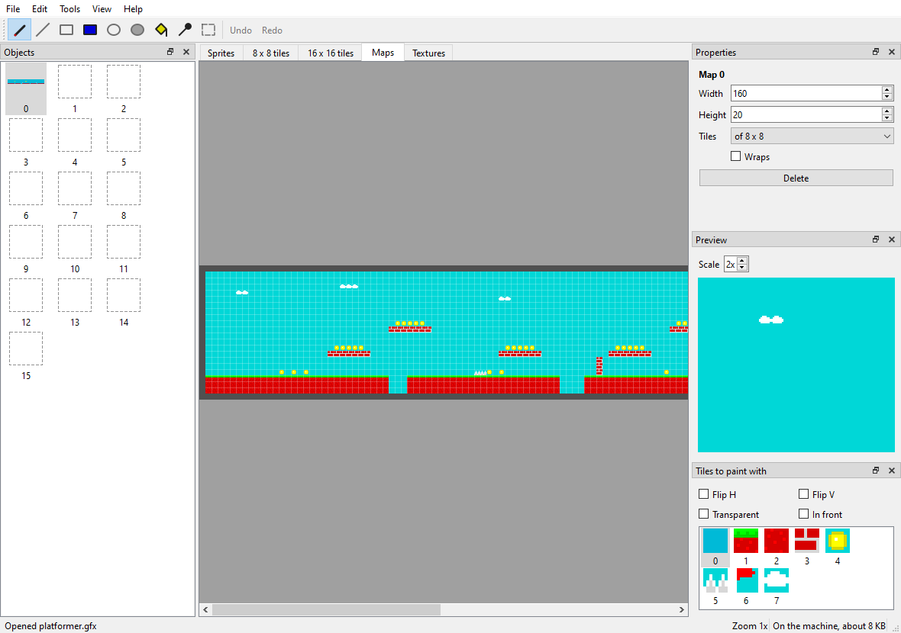

Graphics
ZX-V has no sprite or tile hardware. Instead, the ROM contains a graphics engine: routines that run on the main processor and draw sprites, tile maps, shapes and textured floors into video memory, very fast. The video hardware adds what software cannot do well: two screen pages, hardware scrolling, per-line effects and colour remapping.
This page explains all of it with complete programs. Each function is described in detail in the API reference. To get started with C on ZX-V, read the SDK guide first.
Contents
- How the engine draws
- The video memory
- Pages and double buffering
- Drawing in memory
- Sprites
- Tile maps
- Hardware scrolling
- Raster effects and colour remapping
- Mode 7
- Images from PNG files:
png2gfx.py - The graphics editor for the PC:
zxv-gfx - The graphics editor on the machine:
gfxedit - How fast is it?
How the engine draws
Include zxv_gfx.h. Every drawing function draws on the current
target:
- By default, the drawing page: one of the two video pages, chosen with
zxv_gfx_draw_page(page). At the start of a program it is page 0, the visible one. - Or a bitmap in memory, chosen with
zxv_gfx_target(&bitmap).zxv_gfx_target(0)goes back to the drawing page.
Some rules apply to everything:
- Colours are 0–15. In sprites, tiles and copies with transparency,
colour 8 (
ZXV_TRANSPARENT) is transparent: it leaves what was underneath. - Coordinates are signed and start at the top left. Everything is clipped to the target, so you can draw partly (or completely) outside it without harm.
zxv_gfx_clip(x0, y0, x1, y1)limits drawing to a smaller rectangle (x1andy1excluded). Changing the target withzxv_gfx_targetremoves the clip rectangle; changing the drawing page withzxv_gfx_draw_pagekeeps it.- The order of drawing is the order of depth: what you draw last is in front.
- The engine gives the same pixels on the emulator and on the real machine, because it is the same code.
The simple routines zxv_cls, zxv_plot and the text routines also draw
on the drawing page, but not on bitmaps.
The video memory
Each page is a normal block of memory: page 0 starts at ZXV_VRAM0_BASE
(0x2000_4000) and page 1 at ZXV_VRAM1_BASE (0x2001_C000). Pixels take
4 bits, two per byte, line after line:
| Mode | Pixels | Bytes per line |
|---|---|---|
| 0 | 256 × 192 | 128 |
| 1 | 512 × 384 | 256 |
Pixel (x, y) is in byte y × bytes_per_line + x / 2: in the low 4
bits if x is even, in the high 4 bits if x is odd. Seen as 32-bit words,
each word holds 8 consecutive pixels, pixel x in bits 4·(x mod 8) to
4·(x mod 8)+3.
#include "zxv_api.h"
/* Set pixel (x, y) of page 0 in mode 0: 128 bytes per line, two pixels per
* byte, the left one (even x) in the low 4 bits. */
static void pset(int x, int y, int c)
{
volatile uint8_t *p = (volatile uint8_t *)(uintptr_t)ZXV_VRAM0_BASE + y * 128 + x / 2;
if (x & 1)
*p = (uint8_t)((*p & 0x0F) | c << 4);
else
*p = (uint8_t)((*p & 0xF0) | c);
}
int main(void)
{
zxv_wait_vblank(); /* a frame has just started... */
while (*(volatile uint32_t *)(uintptr_t)ZXV_SV_SYSFLAGS & ZXV_SYSF_LINK_BUSY)
; /* ...wait until it has been sent */
for (int y = 0; y < 192; y++)
for (int x = 0; x < 256; x++)
pset(x, y, (x ^ y) & 15); /* a pattern in all the colours */
while (zxv_key_get() < 0)
zxv_wait_vblank();
return 0;
}
In mode 0 only the first 24 KB of each 96 KB page are shown; the rest is free memory for your program (except with the large scrolling fields of Hardware scrolling).
If you know the Spectrum: there are no attributes and no thirds: every pixel has its own colour and the lines are in order.
Pages and double buffering
At the start of each frame (the VBLANK), the system takes the visible page and sends it to the screen, together with the video registers. That copy is shown during the following frame. Two consequences:
- Writing to the page that is not visible is always safe.
- Right after a VBLANK, while the bit
ZXV_SYSF_LINK_BUSYofZXV_SV_SYSFLAGSis 1, the system is still reading the visible page (for up to 1.5 ms in mode 0 and 6 ms in mode 1). If you write to that page then, part of the change may reach this frame and part the next. The example above waits for the bit to clear before drawing.
For animation, the clean way is double buffering: draw the next frame on the hidden page, make it visible, and wait for the VBLANK.
int visible = 0;
for (;;) {
int hidden = 1 - visible;
zxv_gfx_draw_page(hidden); /* 1. draw on the page nobody sees */
draw_everything();
zxv_set_page(hidden); /* 2. it will be visible from the next frame */
zxv_wait_vblank(); /* 3. wait for that frame */
visible = hidden;
}
The move-a-sprite program of the guide is a complete
example. Before returning to BASIC, leave page 0 visible and as the drawing
page (zxv_set_page(0); zxv_gfx_draw_page(0);).
zxv_set_page changes the ZXV_V_PAGE register. All video registers work
the same way: you write them whenever you like, and they take effect at
the next VBLANK.
Drawing in memory
A bitmap (zxv_bitmap) describes an image in memory, in the same
format as the video memory:
typedef struct {
uint8_t *pix; /* first pixel, aligned to 4 bytes */
uint16_t stride; /* bytes per line, a multiple of 4 */
uint16_t w, h; /* size in pixels */
uint16_t reserved;
} zxv_bitmap;
You can make one target and draw on it with all the functions of the
engine, then copy parts of it to the screen with zxv_gfx_blit or turn
them into sprites. It is the easy way to make graphics without image
files: Estela draws its rocks, mines, explosions and bosses this way when
it starts. Declare the pixels as a uint32_t array to get the alignment:
static uint32_t pix[32 * 16 / 8]; /* 32x16 pixels: 16 bytes per line */
zxv_bitmap b = { (uint8_t *)pix, 16, 32, 16, 0 };
zxv_gfx_blit(&b, sx, sy, w, h, x, y, flags) copies the rectangle
(sx, sy, w, h) of a bitmap to (x, y) on the target. flags can mirror it
(ZXV_FLIP_H, ZXV_FLIP_V) and skip colour 8 (ZXV_BLIT_TRANSPARENT).
Sprites
A sprite is a piece of a bitmap converted with zxv_spr_prepare into
a format that draws fast, with its transparency mask already computed. You
prepare each sprite once and draw it as often as you like:
- Size of the buffer: 8 + h × ⌈w / 8⌉ × 8 bytes.
zxv_spr_preparewith aNULLbuffer returns that number. Up to 1024 × 1024 pixels. zxv_spr_draw(sprite, x, y, flags, colours)draws it, mirrored withZXV_FLIP_HandZXV_FLIP_V.colours, if notNULL, is a table of 16 bytes that recolours it: colour c is drawn ascolours[c]. Transparent pixels stay transparent.zxv_spr_draw_scaled(sprite, x, y, w, h, flags, colours)draws it stretched or shrunk to w × h pixels: for things that come closer or go away. It costs about three times as much as a normal sprite of the final size.zxv_spr_collide(a, ax, ay, b, bx, by)returns 1 if any opaque pixel of sprite a at (ax, ay) overlaps one of b at (bx, by): pixel-perfect collisions.
#include "zxv_gfx.h"
static uint32_t sheet_pix[32 * 16 / 8]; /* a 32x16 sheet: two 16x16 frames */
static uint32_t face[(8 + 16 * 2 * 8) / 4]; /* 8 + h * ceil(w/8) * 8 bytes */
static uint32_t ball[(8 + 16 * 2 * 8) / 4];
static void make_sheet(void)
{
zxv_bitmap b = { (uint8_t *)sheet_pix, 16, 32, 16, 0 }; /* stride 16 bytes = 32 px */
zxv_gfx_target(&b);
zxv_gfx_rect(0, 0, 32, 16, ZXV_TRANSPARENT);
zxv_gfx_circle(7, 7, 7, 6, 1); /* frame 0: a face looking right */
zxv_gfx_rect(9, 4, 2, 3, 0);
zxv_gfx_line(8, 11, 12, 10, 2);
zxv_gfx_circle(23, 7, 6, 10, 1); /* frame 1: a ball */
zxv_gfx_target(0);
zxv_spr_prepare(&b, 0, 0, 16, 16, face);
zxv_spr_prepare(&b, 16, 0, 16, 16, ball);
}
int main(void)
{
make_sheet();
zxv_gfx_rect(0, 0, 256, 192, 1);
zxv_spr_draw(face, 16, 16, 0, 0); /* as drawn */
zxv_spr_draw(face, 40, 16, ZXV_FLIP_H, 0); /* mirrored */
zxv_spr_draw(face, 64, 16, ZXV_FLIP_V, 0); /* upside down */
static const uint8_t green[16] = { 0, 1, 2, 3, 4, 5, 12, 7, 8, 9, 10, 11, 12, 13, 14, 15 };
zxv_spr_draw(face, 88, 16, 0, green); /* colour 6 drawn as 12 */
zxv_spr_draw_scaled(face, 16, 48, 64, 64, 0, 0); /* four times bigger */
zxv_spr_draw_scaled(face, 96, 48, 8, 8, 0, 0); /* half size */
/* Pixel-perfect collision: the boxes overlap in both cases, but only
* in the first do opaque pixels touch. */
int a = zxv_spr_collide(face, 150, 60, ball, 158, 66);
int b = zxv_spr_collide(face, 150, 100, ball, 163, 113);
zxv_spr_draw(face, 150, 60, 0, 0);
zxv_spr_draw(ball, 158, 66, 0, 0);
zxv_spr_draw(face, 150, 100, 0, 0);
zxv_spr_draw(ball, 163, 113, 0, 0);
zxv_gfx_rect(190, 64, 8, 8, a ? 12 : 2); /* green = touching, red = not */
zxv_gfx_rect(190, 108, 8, 8, b ? 12 : 2);
while (zxv_key_get() < 0)
zxv_wait_vblank();
return 0;
}
- A prepared sprite is independent of its bitmap: you can reuse the bitmap to draw the next sprite.
- Keep positions in fixed point (for example, in 1/16 of a pixel) for
smooth, slow movement, and shift right when you draw: Estela and
graphicsdo it. - Collisions with the scenery are better checked with
zxv_map_cell.
Tile maps
A tile map builds a large scene from small square pieces, tiles of 8 × 8 or 16 × 16 pixels, like a mosaic. The map is a grid of cells; each cell (16 bits) says which tile goes there and how:
| Bits | Meaning |
|---|---|
0–11 (ZXV_CELL_TILE) |
Tile number, 0 to 4095 |
12 (ZXV_CELL_FLIP_H) |
Mirrored horizontally |
13 (ZXV_CELL_FLIP_V) |
Mirrored vertically |
14 (ZXV_CELL_TRANSP) |
Colour 8 is transparent (otherwise the tile is opaque and draws faster) |
15 (ZXV_CELL_PRIO) |
Priority: the tile goes in front of the sprites |
typedef struct {
const uint16_t *cells; /* the cells, row after row */
uint16_t w, h; /* size in cells */
const uint8_t *tiles; /* the tile graphics, one after another (32 or 128 bytes each) */
uint8_t size; /* 8 or 16 */
uint8_t flags; /* ZXV_MAP_WRAP: the map repeats in both directions */
} zxv_tilemap;
A tile is just its pixels in the video memory format, line after line: an 8 × 8 tile is 32 bytes (4 per line) and a 16 × 16 one, 128 bytes. A column of 8 × 8 tiles drawn in a bitmap 8 pixels wide (4 bytes per line) is therefore exactly the tile data the map needs.
zxv_map_draw(map, mx, my, x, y, w, h, filter)fills the rectangle (x, y, w, h) of the target with the map, starting at pixel (mx, my) of the map. Moving mx and my scrolls the scene, pixel by pixel. Cells outside a map that does not repeat are not drawn.filterchooses the cells:ZXV_MAP_ALL,ZXV_MAP_BACK(without priority) orZXV_MAP_FRONT(with priority). A frame with scenery in front of the sprites is: the map withZXV_MAP_BACK, the sprites, the map withZXV_MAP_FRONT.zxv_map_cell(map, px, py)returns the cell at pixel (px, py) of the map: the way to know whether there is a wall where your character wants to go.
#include "zxv_gfx.h"
#define MAP_W 64 /* cells: 64 x 24 of 8x8 pixels */
#define MAP_H 24
static uint32_t tile_pix[3 * 8]; /* 3 tiles of 8x8: 32 bytes each */
static uint16_t cells[MAP_W * MAP_H];
static const zxv_tilemap level = { cells, MAP_W, MAP_H, (const uint8_t *)tile_pix, 8, ZXV_MAP_WRAP };
enum { SKY, BRICK, GRASS };
static void make_level(void)
{
zxv_bitmap b = { (uint8_t *)tile_pix, 4, 8, 3 * 8, 0 }; /* the tiles, one below another */
zxv_gfx_target(&b);
zxv_gfx_rect(0, 0, 8, 8, 5); /* SKY: cyan */
zxv_gfx_rect(0, 8, 8, 8, 2); /* BRICK: red with mortar */
zxv_gfx_line(0, 11, 7, 11, 7);
zxv_gfx_line(3, 8, 3, 11, 7);
zxv_gfx_line(7, 12, 7, 15, 7);
zxv_gfx_rect(0, 16, 8, 8, 4); /* GRASS: green */
zxv_gfx_line(0, 16, 7, 16, 12);
zxv_gfx_target(0);
for (int y = 0; y < MAP_H; y++)
for (int x = 0; x < MAP_W; x++) {
uint16_t t = SKY;
if (y >= 20)
t = BRICK;
else if (y == 19)
t = GRASS;
else if (y == 12 && (x / 6) % 3 == 0)
t = BRICK; /* floating platforms */
cells[y * MAP_W + x] = t;
}
}
int main(void)
{
make_level();
int scroll = 0, visible = 0;
while (zxv_key_get() < 0) {
int hidden = 1 - visible;
zxv_gfx_draw_page(hidden);
/* The 256x192 window of the map that starts at pixel (scroll, 0). */
zxv_map_draw(&level, scroll, 0, 0, 0, 256, 192, ZXV_MAP_ALL);
/* Is there a brick in the middle of the screen, on the platforms row? */
uint16_t c = zxv_map_cell(&level, scroll + 128, 12 * 8 + 4);
zxv_gfx_rect(124, 80, 8, 8, (c & ZXV_CELL_TILE) == BRICK ? 15 : 0);
zxv_set_page(hidden);
zxv_wait_vblank();
visible = hidden;
scroll++; /* the map wraps, so this never ends */
}
zxv_set_page(0);
zxv_gfx_draw_page(0);
return 0;
}
Redrawing the whole screen of tiles every frame is fine in mode 0 (about 11 % of the frame when the map is not aligned to whole tiles). For large scenes, and in mode 1, it is better to let the hardware scroll.
Hardware scrolling
The registers ZXV_V_SCROLL_X and ZXV_V_SCROLL_Y (16 bits each) move
the picture inside the page, wrapping round: what leaves on one side
comes back on the other. They cost nothing: the video hardware does it.
In mode 0, the page can also be bigger than the screen, and the screen
becomes a window you move over it. The register ZXV_V_VSIZE chooses the
size of both pages:
ZXV_V_VSIZE |
Page | Bytes per line | For |
|---|---|---|---|
ZXV_VSIZE_SCREEN (0) |
256 × 192 | 128 | Normal |
ZXV_VSIZE_2X2 (1) |
512 × 384 | 256 | Scrolling in both directions |
ZXV_VSIZE_WIDE (2) |
1024 × 192 | 512 | Horizontal scrolling |
ZXV_VSIZE_TALL (3) |
256 × 768 | 128 | Vertical scrolling |
With a large page the whole 96 KB are used, and the system takes as long
to send it as in mode 1 (ZXV_SYSF_LINK_BUSY lasts up to 6 ms). The
drawing functions follow the new size: after changing ZXV_V_VSIZE, the
drawing page is 512 × 384, 1024 × 192, etc.
#include "zxv_gfx.h"
#define REG8(a) (*(volatile uint8_t *)(uintptr_t)(a))
#define REG16(a) (*(volatile uint16_t *)(uintptr_t)(a))
int main(void)
{
REG8(ZXV_V_VSIZE) = ZXV_VSIZE_2X2; /* mode 0 page of 512 x 384 */
zxv_gfx_draw_page(0); /* the engine follows the new size */
zxv_gfx_rect(0, 0, 512, 384, 1);
for (int i = 0; i < 40; i++) /* draw the whole field once */
zxv_gfx_circle((i * 97) % 512, (i * 61) % 384, 10 + i % 20, 2 + i % 13, 1);
int x = 0, y = 0;
while (zxv_key_get() < 0) {
zxv_wait_vblank();
x = (x + 1) % 512; /* the window wraps around the field */
y = (y + 1) % 384;
REG16(ZXV_V_SCROLL_X) = (uint16_t)x; /* no redrawing: the video does it */
REG16(ZXV_V_SCROLL_Y) = (uint16_t)y;
}
REG16(ZXV_V_SCROLL_X) = 0;
REG16(ZXV_V_SCROLL_Y) = 0;
REG8(ZXV_V_VSIZE) = ZXV_VSIZE_SCREEN;
return 0;
}
For a level longer than the page, use the trick of the consoles: because
the scroll wraps round, draw only the column of tiles that is about to
come into view, just outside the window, and keep moving. The
scroll example does exactly
that on a 1024 × 192 page: each new column of 8 × 144 pixels costs less
than 1 % of a frame.
Raster effects and colour remapping
The line table
The line table (ZXV_LINE_TABLE) lets every line of the picture have
its own border colour, colour table, horizontal scroll and even choose
which line of the page it shows. With it you make parallax (each band of
the scenery scrolls at its own speed), split screens, water, road effects
and border stripes, without changing registers in the middle of a frame.
It has one 8-byte entry for each line of the whole frame including the
border: 240 lines in mode 0 (the first 24 are the top border, so screen
line y is entry 24 + y) and 480 in mode 1 (48 of top border). In
zxv.h, ZXV_FRAME_LINES(mode) and ZXV_BORDER_LINES(mode).
| Offset | Size | Field | "As usual" value |
|---|---|---|---|
ZXV_LT_BORDER (0) |
8 bits | Border colour of this line | 0xFF |
ZXV_LT_REMAP (1) |
8 bits | Colour table of this line (0–3) | 0xFF |
ZXV_LT_SCROLL_X (2) |
16 bits | Horizontal scroll of this line | 0xFFFF |
ZXV_LT_SRC_LINE (4) |
16 bits | Line of the page shown here | 0xFFFF |
| 6 | 16 bits | Reserved: write 0 |
The table is used while bit ZXV_VFLAG_LINETAB of ZXV_V_FLAGS is set.
Like the visible page, it is read right after each VBLANK: change it after
ZXV_SYSF_LINK_BUSY clears.
Colour remapping
There are four remapping tables of 16 bytes at ZXV_REMAP_TABLES.
The register ZXV_V_REMAP chooses which one the screen goes through: a
pixel of colour v is shown as colour table[v]. Table 0 is normally
left as it is (each colour as itself). Changing a table changes the colours
of the whole screen at once, without touching the video memory: fades,
flashes, colour cycling.
Each table also has its own palette: the 16 RGB565 colours shown for
each index, at ZXV_PALETTE(t). They start as the usual ones; changing one
gives any colour (ZXV_RGB(r, g, b), 0 to 255 per component) to everything
drawn with it. With the line table, each band of the screen can have its own
16 colours:
volatile uint16_t *pal1 = (volatile uint16_t *)(uintptr_t)ZXV_PALETTE(1);
pal1[2] = ZXV_RGB(255, 128, 0); /* table 1's red, orange */
Index 8 is still transparent for sprites and tiles even if the palette gives it another colour.
This program shows both: border stripes with the line table, and six bands whose colours rotate through table 1:
#include "zxv_gfx.h"
#define REG8(a) (*(volatile uint8_t *)(uintptr_t)(a))
#define REG32(a) (*(volatile uint32_t *)(uintptr_t)(a))
/* After a VBLANK the system is still reading the visible page, the line
* table and the remap tables for a moment: wait until it has finished. */
static void wait_frame(void)
{
zxv_wait_vblank();
while (REG32(ZXV_SV_SYSFLAGS) & ZXV_SYSF_LINK_BUSY)
;
}
int main(void)
{
volatile uint8_t *remap1 = (volatile uint8_t *)(uintptr_t)(ZXV_REMAP_TABLES + 16);
volatile uint8_t *lines = (volatile uint8_t *)(uintptr_t)ZXV_LINE_TABLE;
zxv_gfx_rect(0, 0, 256, 192, 0);
for (int i = 0; i < 6; i++) /* six bands in colours 1 to 6 */
zxv_gfx_rect(0, 40 + i * 16, 256, 16, 1 + i);
/* Line table: every line of the 240-line frame (24 of top border first)
* gets its own border colour; the rest of each entry means "as usual". */
for (int l = 0; l < ZXV_FRAME_LINES(0); l++) {
volatile uint8_t *e = lines + l * ZXV_LINE_ENTRY_SIZE;
e[ZXV_LT_BORDER] = (uint8_t)(9 + (l / 8) % 7); /* bright stripes */
e[ZXV_LT_REMAP] = 0xFF;
e[ZXV_LT_SCROLL_X] = e[ZXV_LT_SCROLL_X + 1] = 0xFF;
e[ZXV_LT_SRC_LINE] = e[ZXV_LT_SRC_LINE + 1] = 0xFF;
}
REG8(ZXV_V_FLAGS) = ZXV_VFLAG_LINETAB;
REG8(ZXV_V_REMAP) = 1; /* show the screen through table 1 */
int frame = 0;
while (zxv_key_get() < 0) {
wait_frame();
if (frame % 8 == 0) /* rotate colours 1..6: the bands move */
for (int v = 1; v <= 6; v++)
remap1[v] = (uint8_t)(1 + (v - 1 + frame / 8) % 6);
frame++;
}
wait_frame(); /* tidy up before going back */
REG8(ZXV_V_FLAGS) = 0;
REG8(ZXV_V_REMAP) = 0;
for (int v = 0; v < 16; v++)
remap1[v] = (uint8_t)v;
return 0;
}
The scroll example uses the
scroll field of the line table for parallax: the mountains at the top move
at half the speed of the ground.
Mode 7
Mode 7 (named after the SNES mode that made it famous) draws a texture on each line with its own position and step: rotated, zoomed or in perspective, like a floor seen from above.
- The texture (
zxv_m7tex) is a square of 2^log2sizetexels per side, from 2 × 2 (log2size1) to 1024 × 1024 (10), with one byte per texel (0–15). Since a program has 248 KB of user RAM, in practice a texture in RAM goes up to 256 × 256 (log2size8, 64 KB). Withwrap= 1 it repeats for ever; with 0, outside it you see the colourout. - Each line (
zxv_m7line) has the texture position (u, v) of its first pixel and the step (du, dv) per pixel, in 16.16 fixed point (65536 = one texel). zxv_m7_camera(lines, n, &camera)computes the lines of a floor seen by a camera: position, height, angle (0x10000 is a full turn), focal distance and the screen line of the horizon. The lines above the horizon come out empty.zxv_m7_draw(&texture, lines, y, n)drawsnlines on the target starting at liney.
#include "zxv_gfx.h"
static uint8_t texels[64 * 64]; /* a 64x64 texture, one byte per texel */
static zxv_m7line rows[192]; /* one transformation per screen line */
int main(void)
{
for (int y = 0; y < 64; y++) /* a checkerboard */
for (int x = 0; x < 64; x++)
texels[y * 64 + x] = ((x / 8) ^ (y / 8)) & 1 ? 12 : 4;
const zxv_m7tex tex = { texels, 6, 1, 0, 0 }; /* 2^6 = 64, repeats */
int visible = 0;
for (int frame = 0; zxv_key_get() < 0; frame++) {
int hidden = 1 - visible;
zxv_gfx_draw_page(hidden);
zxv_gfx_rect(0, 0, 256, 72, 9); /* the sky */
zxv_m7cam cam = {
.x = frame << 15, .y = 0, /* 16.16 fixed point: moving along x */
.height = 16 << 16,
.angle = frame * 64, /* 0x10000 is a full turn */
.focal = 128 << 16,
.horizon = 64, /* screen line of the horizon */
};
zxv_m7_camera(rows, 192, &cam); /* lines 0..64 come out empty */
zxv_m7_draw(&tex, rows + 72, 72, 120); /* draw lines 72..191 */
zxv_set_page(hidden);
zxv_wait_vblank();
visible = hidden;
}
zxv_set_page(0);
zxv_gfx_draw_page(0);
return 0;
}
Mode 7 costs about 15 instructions per pixel: a full screen in mode 0 is a
quarter of the frame, and in mode 1 it does not fit in a frame, so draw
only the floor. The graphics example
puts objects on the floor with scaled sprites, projected with the same
camera.
Images from PNG files: png2gfx.py
Drawing everything with code is fine for shapes, but for real pixel art
you will want a paint program. sdk/tools/png2gfx.py converts PNG images
into a .gfx file: sprites, tiles, whole levels (cut into tiles, with
the repeated ones reused) and mode 7 textures. It is the format BASIC
loads with LOAD "name" GRAPHICS, and your C program can read it too. It
only needs Python 3.
python3 sdk/tools/png2gfx.py art.gfx --sprites 0 sheet.png 16,16 --level 0 8 level.png --wrap 0
python3 sdk/tools/png2gfx.py --list art.gfx
The first line cuts sheet.png into 16 × 16 sprites numbered from 0, and
turns level.png into map 0 of 8 × 8 tiles that repeats. The second lists
what is in the file: sprite 0: 16 x 16, 8 x 8 tiles: 4,
map 0: 8 x 4 cells.... Its messages are in English, or in Spanish if your
system is.
| Command | Effect |
|---|---|
--sprite N IMAGE [X,Y,W,H] |
Sprite N is the image, or that rectangle of it |
--sprites N IMAGE W,H |
A sprite sheet: sprites N, N+1... of W × H, row by row |
--tiles S N IMAGE [X,Y,W,H] |
The image (or rectangle) cut into S × S tiles (8 or 16), numbered from N |
--level M S IMAGE |
A whole level: cut into S × S tiles, reusing repeated ones (with --flip, also mirrored ones); map M gets the layout. Cells of tiles with transparent pixels get the transparency bit |
--map M S FILE.csv |
Map M from a CSV file with the value of each cell |
--texture N IMAGE [C] |
Texture N (a square, its side a power of 2 from 2 to 256); it repeats or, with C, outside it is colour C |
--wrap M |
Map M repeats |
--screen N IMAGE [B] |
Screen N (like those of SAVE "x" SCREEN$ and loading screens): 256 × 192 (mode 0) or 512 × 384 (mode 1), or the whole frame (320 × 240 or 640 × 480) with the border in the colour of its corner; B, the border colour. With colours other than the usual ones (16 at most), it carries its palette |
--flip |
--level also reuses mirrored tiles |
--key RRGGBB |
That colour is transparent (as well as pixels with alpha below 128) |
Each pixel becomes the nearest ZX-V colour, with a warning if it was not
exact. Paint with the 15 exact colours: each component 00, D7 or FF
(for example D70000 is red and FF0000 bright red). Screens keep their
colours: with colours other than the usual ones (16 at most), the screen
carries its palette.
Reading a .gfx file in C
A .gfx file starts with the 4 letters ZXVG, a version byte (1), a
zero byte and the number of objects (16 bits). Each object has an 8-byte
header (type, 0, number in 16 bits, length of its data in 32 bits) followed
by its data:
| Type | Object | Data |
|---|---|---|
| 1 | Sprite | width, height (16 bits each), then its pixels: ⌈width / 2⌉ bytes per line |
| 2 | Tiles of S × S (S is the object number) | count (16 bits), 0 (16 bits), then the tiles (32 or 128 bytes each) |
| 3 | Map | width, height (16 bits each), tile size, repeat (bytes), 0 (16 bits), then the cells (16 bits each) |
| 4 | Texture | log2 of the side, repeat, colour outside, 0 (bytes), then the texels (one byte each) |
| 5 | Screen | mode (0 or 1), border colour, flags (bit 0: it has a palette), 0 (bytes); with a palette, its 16 RGB565 colours (32 bytes); then the pixels of the page, as in VRAM (24,576 bytes in mode 0, 98,304 in mode 1) |
All numbers are little-endian. To read them, the SDK has a small
library, zxv_gfxfile.h (with gfxfile.c). The file can be anywhere:
loaded from the card with zxv_file_load or inside the program. As the
objects inside the file are not aligned, each function copies its object to
a buffer of the program, aligned the way the engine wants it, and returns
the bytes that buffer needs (0 if the object is not there; with a NULL
buffer, it only tells):
| Function | What it does |
|---|---|
zxv_gfxf_open(&f, data, size) |
1 if it is a well-formed .gfx (it checks every object); f is then ready |
zxv_gfxf_sprite(&f, n, &bitmap, buf, room) |
Sprite n as a bitmap, for zxv_spr_prepare, zxv_gfx_blit or zxv_gfx_target |
zxv_gfxf_tiles(&f, side, buf, room, &count) |
The 8 or 16 pixel tiles |
zxv_gfxf_map(&f, n, &map, tiles, buf, room) |
Map n: its cells in buf and, in the zxv_tilemap, the tiles given |
zxv_gfxf_texture(&f, n, &texture, buf, room) |
Mode 7 texture n |
zxv_gfxf_screen(&f, n, &mode, &border, buf, room) |
Screen n: its pixels in buf, like a VRAM page (for example, the hidden one, to flip pages at VBLANK) |
zxv_gfxf_screen_palette(&f, n, pal) |
The 16 RGB565 colours screen n was shown with, to put in a palette (ZXV_PALETTE(t)): 1 if it carries them; otherwise 0 and the usual ones |
zxv_gfxf_find(&f, kind, n, &length) |
An object's data as it is in the file (kind: ZXV_GFXF_SPRITE 1, ZXV_GFXF_TILES 2, ZXV_GFXF_MAP 3, ZXV_GFXF_TEXTURE 4, ZXV_GFXF_SCREEN 5) |
This program loads art.gfx from the current folder, prepares the two
sprites and the map (with 8 pixel tiles), and scrolls them:
#include "zxv_gfxfile.h"
static uint8_t file[16 * 1024]; /* the whole .gfx file */
static uint32_t pix[4096]; /* a sprite, aligned, to prepare it */
static uint32_t face[1024], ball[1024]; /* the prepared sprites */
static uint32_t tiles[64 * 32 / 4]; /* up to 64 8x8 tiles */
static uint16_t cells[1024];
/* Sprite num of the file, prepared in out. */
static int load_sprite(const zxv_gfxfile *f, int num, void *out, uint32_t room)
{
zxv_bitmap b;
uint32_t n = zxv_gfxf_sprite(f, num, &b, pix, sizeof(pix));
if (!n || n > sizeof(pix) || zxv_spr_prepare(&b, 0, 0, b.w, b.h, NULL) > room)
return 0;
zxv_spr_prepare(&b, 0, 0, b.w, b.h, out);
return 1;
}
int main(void)
{
zxv_gfxfile f;
zxv_tilemap level;
int n = zxv_file_load("art.gfx", file, sizeof(file)); /* if it fits in 'file' */
if (n < 0 || !zxv_gfxf_open(&f, file, (uint32_t)n) ||
!load_sprite(&f, 0, face, sizeof(face)) || !load_sprite(&f, 1, ball, sizeof(ball)))
zxv_report_error(0, "Cannot load art.gfx"); /* back to BASIC with this report */
uint32_t t = zxv_gfxf_tiles(&f, 8, tiles, sizeof(tiles), NULL);
uint32_t c = zxv_gfxf_map(&f, 0, &level, tiles, cells, sizeof(cells));
if (!t || t > sizeof(tiles) || !c || c > sizeof(cells))
zxv_report_error(0, "The map of art.gfx does not fit");
int visible = 0;
for (int frame = 0; zxv_key_get() < 0; frame++) {
int hidden = 1 - visible;
zxv_gfx_draw_page(hidden);
zxv_map_draw(&level, frame, 0, 0, 0, 256, 192, ZXV_MAP_ALL);
zxv_spr_draw(face, 60, 120, 0, NULL);
zxv_spr_draw(ball, 100 + frame % 100, 60, 0, NULL);
zxv_set_page(hidden);
zxv_wait_vblank();
visible = hidden;
}
zxv_set_page(0);
zxv_gfx_draw_page(0);
return 0;
}
To build it, add $(SDK)/gfxfile.c to the program's files (in the Makefile
above, SOURCES := hello.c $(SDK)/gfxfile.c), and put art.gfx in the
same folder of the SD card as the program. The
Route 128 and
Estela games of the examples read
their graphics like this: they carry their .gfx inside the program and,
if there is another one on the card, they use that one.
The graphics editor for the PC: zxv-gfx
To draw on the PC, the emulator packages come with zxv-gfx, an editor
for the same .gfx files for Windows and Linux (in the AppImage,
./ZX-V-x86_64.AppImage zxv-gfx). It is free software under the MIT
licence: its code is in sdk/tools/gfx, and it
builds on its own with Qt 6 (cmake -S sdk/tools/gfx -B build-gfx). It
speaks Spanish or English, the system's language (or the one you ask for:
zxv-gfx --lang es).

- A tab for each kind of object (sprites, 8 and 16 pixel tiles, maps, textures and screens) and, on the left, their thumbnails; double clicking an empty slot creates it. On the right, the palette, the properties (size, wrapping, the colour outside…) and a preview: sprites animated with the next ones, tiles repeated 3 × 3 to see whether they match, and textures also as a mode 7 floor (View > The texture in mode 7).
- Drawing: pen, line, box, ellipse (empty or filled), flood fill, picking a colour and selecting. The selection moves by dragging it, and can be mirrored, turned and shifted; Enter drops it and Esc puts it back. The left button paints with one colour and the right one with another (X swaps them).
- Maps are painted with the tile chosen in the Tiles to paint with panel and its attributes (both mirrors, transparent and in front); the right button puts tile 0. Double clicking a tile in the panel opens it for editing.
- Screens can have their own colours: double clicking a colour of the palette changes it to any other, and the screen then carries its palette.
- Copy and paste with the system clipboard: what you copy pastes into other programs as an image, and an image from another program pastes with ZX-V colours (the nearest one to each pixel).
- Import an image (File > Import, or by dragging it onto the window): a
sprite, a sprite sheet, tiles, a whole level (the tiles, reusing the
repeated ones and, if you want, the mirrored ones, and the map), a texture
or a screen. It gives the same as
png2gfx.pywith the same commands. Export as PNG saves the object, the tile set or the drawn map. - Unlimited undo and redo, zoom with Ctrl and the wheel, and the middle button to drag the view. The status bar tells how much it would all take on the machine.
The graphics editor on the machine: gfxedit
Without leaving the machine: LOAD "ROM:gfxedit" (or gfxedit.zxv from
sdk/build) opens an editor for the same .gfx files, used with the mouse.
At the top there is a tab for each kind of graphic:
| Tab | What it edits |
|---|---|
| Sprites | The 256 sprites, from 1 × 1 to 1024 × 1024 pixels (colour 8 is the transparent one) |
| Tiles 8, Tiles 16 | The two tile sets: the tile enlarged, the same tile repeated 3 × 3 to see whether it matches its neighbours, and below the whole set, to pick from |
| Maps | The 16 maps: painted with the chosen tile and its attributes (both mirrors, 8 transparent and in front), as with MAP POKE |
| Textures | The 4 mode 7 textures: their side, whether they wrap and the colour outside |
Screens (those of SAVE "x" SCREEN$ and loading screens) are not edited
here but in zxv-gfx: loading a file skips them, and saving it leaves them
out.
- Drawing: pen, line, box, filled box, flood fill and picking a colour from the image. The left button paints with one colour of the palette and the right button with another.
- The whole image: both mirrors, turning it, shifting it (what leaves on one side comes back on the other), clearing, copying and pasting it.
- Sprites animate: the panel shows the sprite and the following ones, one after another, to see an animation made of consecutive sprites.
- Undo with U (or Ctrl+Z); zoom with the wheel or + and -; Page Up and Page Down, the previous and next object; Tab, the next tab.
- Load and Save use the card. Started from
ROM:, it saves toSD:.
About 112 KB of graphics fit at once. Its code is in
sdk/examples/gfxedit: store.c reads and
writes .gfx files, and your program can use it as it is.
How fast is it?
At 60 frames per second the processor has about 2.4 million cycles per frame. These figures were measured on the real machine:
| Operation | Mode 0 (256 × 192) | Mode 1 (512 × 384) |
|---|---|---|
| Clear the page | 1.2 % of a frame | 2.7 % |
| Full screen of 8 × 8 tiles, aligned | 3.9 % | 11.7 % |
| Full screen of 8 × 8 tiles, scrolled by any number of pixels | 13.1 % | 48 % |
| Full screen of 16 × 16 tiles, aligned | 2.2 % | 6.4 % |
| 100 sprites of 16 × 16 | 6.1 % | 5.6 % |
| 100 sprites of 16 × 16 scaled to 32 × 32 | 63 % | 62 % |
| 100 sprites of 16 × 16 scaled to 12 × 12 | 28 % | 27 % |
| Mode 7, full screen | 31 % | 121 % |
| 100 triangles of about 470 pixels | 29 % | 28 % |
| 100 random lines | 14 % | 25 % |
- With hardware scrolling the scenery is not redrawn: a new column of 8 × 144 pixels costs 0.8 % in mode 0. In mode 1 it is almost a must.
- Opaque tiles (without the transparency bit) draw faster than transparent ones.
- Scaled sprites are for a few objects that come closer, not for all of them.